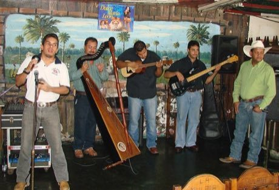

Home / Classical Worlds / The Americas: Andes and South America
Playable heritage gameJoropo llanero band
Also known as Joropo llanero
Joropo is the music and dance of the great grassland plains of Venezuela and Colombia. A small band of a harp, a four-string cuatro and maracas drives a quick rolling rhythm that leans between two and three beats at once.


How to play
- Nine lanes stand for the band: three harp bass strings, four harp melody strings, the cuatro and the maracas.
- Notes travel toward a line at the bottom; strike each lane just as its note arrives.
- Begin with maracas and cuatro, then let the harp bass walk in, then play the whole band.
- Keep the rolling feel: every beat is split into three quick strokes.
Rules at a glance
- Each beat is divided into three, so strokes fall on the beat and on the two thirds that follow it.
- A stroke within a hair of the note is perfect, a near one is good, and a missed one scores nothing.
- An extra stroke while a song is running costs a few points.
- Each song plays twice; three stars need roughly nine notes in ten on time.
- The cuatro lane stands for a whole strummed chord and is sounded as one note here.
About the tradition
Joropo is kept alive in the llanos of Venezuela and Colombia by family bands, festivals and contests of singers and harpists. It is danced as a quick, stamping couple dance and sung with long improvised verses.
Origins
Usually placed in the era of Classical Worlds (about 1000 BCE to 500 CE), although its exact origins are uncertain, within the cultural world of The Americas: Andes and South America.
Credits
- Tradition: joropo llanero of the Venezuelan and Colombian plains; figures written for this game
- Photo of a joropo band from Wikimedia Commons (CC BY 2.0)
- Photo: Axoben Bastidas, CC BY 2.0, source on Wikimedia Commons
- Text: CC BY-SA 4.0, World Heritage Games.
Sources

Get the app
Joropo llanero band is one of 11 instruments in the String Music of the World app for iPhone, iPad and Android. Live on Google Play. Submitted to the App Store; in review, and the store link appears here the day it goes live. One app, many traditions, no account needed.
More games to play


String Marionette Theatre
Czechia · Performance and storytellingPlay preview · in the Story & Theatre of the World app
Kathputli string puppets
India · Performance and storytellingPlay preview · in the Story & Theatre of the World app
More from Venezuela

Perinola
Venezuela · Dexterity and skill games